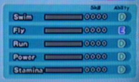

 Your chao�s grades are very important in Competitions. You can check your grades at the Doctor�s office (see Chao Kindergarten.) Ask for the Medical Chart. It looks like the chart to the right.
Grades determine how much an animal/chaos drive/fruit will raise the Skill Point. The higher the grade, the more skill points can be gained once your chao increases a level. There are 6 different grades, E, D, C, B, A, and S. The easiest and most common S to get is in stamina.
There is a range of points you will get for each Skill Level. Here they are.
S | +26, +27, +28, +29, +30
A | +23, +24, +25, +26, +27
B | +20, +21, +22, +23, +24
C | +17, +18, +19, +20, +21
D | +14, +15, +16, +17, +18
E | +11, +12, +13, +14, +15
The Chao can improve their grades by geneology. If one parent was an S-rank in Flying and the other was a B-rank flying, they will automatically inherit the highest rank.